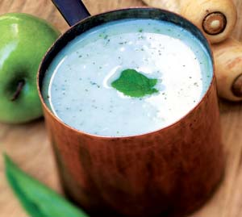
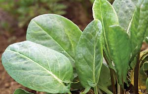
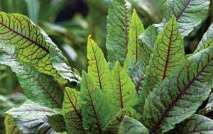
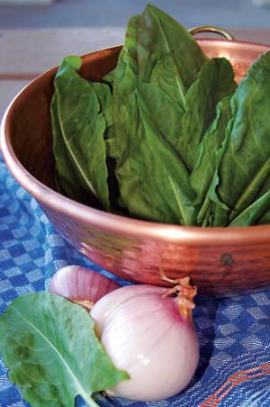
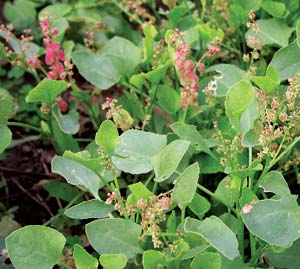

Zesty Sorrel
Sorrel is the garden green with zing!
By William Woys Weaver
February/March 2007
Sorrel is a delightful potherb and one of nature’s most special greens, with a tangy taste sensation that can take your taste buds through all of the following: limes, lemons, spinach, rhubarb, cabbage and amaranth. There are many kinds of sorrel, and all of them are nutritious and easy to grow. Rich in potassium and vitamins A, B1 and C, they have been part of healthful diets and botanic medicine for thousands of years.
Sorrel was one of those foods that helped ward off scurvy, the result of the vitamin C deficiency that was once the scourge of the American winter diet. Because of their cooling nature, sorrels also were given to people suffering from fevers, but they were such a pervasive ingredient in early spring cookery that their medicinal properties were secondary to culinary uses. Sorrel sauce with shad is a classic spring dish in the middle Atlantic states. It’s always been a great match with oily fish such as herring and salmon. Sorrel pudding pie was a heralded spring favorite among the Pennsylvania Dutch and in the farmhouses of early America. Chopped common sorrel makes a terrific addition to green salads, and the lemony leaves are excellent in the cracked wheat salad known as tabouli. What follows are discussions of the most important culinary varieties of sorrel.
Common Sorrel (Rumex acetosa)
This sorrel was gathered from the wild until the late 1600s, when French gardeners decided to bring it under cultivation to improve the flavor and texture of the leaves. The oldest cultivated sorrel still extant is ‘Belleville,’ a lemon-flavored, large-leafed variety domesticated in France during the 1730s. Its powerful lemony flavor can be tamed easily by blending it with other milder ingredients. You can plant it on marginal ground in the garden, even in semi-shade, ignore it, and still realize a delicious harvest every year. Not only does it withstand abuse, but pests ignore it almost entirely. This love of neglect is true of all sorrels, regardless of species. It may be difficult to find ‘Belleville’ seed in the United States, but a good substitute is ‘Blonde de Lyon,’ which is available from The Gourmet Gardener and Richter’s of Canada (see “Sources”).
Another common sorrel is ‘Profusion,’ an unusual patented variety that mutated naturally in France to produce plants that never run to seed, always have fresh, ready-to-pick leaves, and have no known natural enemies aside from deer, rabbits, chickens and goats. The leaves are round, dark green and more succulent than most other common sorrels. It can be eaten raw in salads or cooked like other greens. This gourmet sorrel was introduced commercially in 1993 by Richter’s and is still available from them. ‘Profusion’ sorrel can be increased only by division or cuttings. It makes a great ornamental border plant because it grows in compact mounds of 8 to 10 inches.
French Sorrel, or Buckler Leaf Sorrel (Rumex scutatus)
This attractive sorrel native to Europe grows close to the ground, almost like a vine, hardly more than 6 inches tall. It is this species that is used to make classic French sorrel soup. It also was used extensively in medieval cookery both in sauces and as a garnish for elaborate court dishes. Its flavor is mild, more like green grapes than common sorrel. The leaves are shaped like small shields, and it’s a delightful plant for the herb garden.
Blood Sorrel (Rumex sanguineus)
Blood sorrel is a wild sorrel found in many parts of Eurasia. It is valued for its pointed and bright lime-green leaves with dark red veins, and now is used extensively in Europe as an accent plant in ornamental landscaping.
For culinary uses, the plant must be harvested young. It tastes a little like lettuce, so the baby spring leaves are ideal for salad mixes. When the plant begins to toughen and mature, the leaves can be cooked like spinach or used in stir-fries. Because of its low-growing habit (about 12 inches tall), blood sorrel makes a nice border plant or garden accent. It is a noninvasive perennial, so once it’s established you will have it for a long time.
Indian Sorrel, or Bladder Dock (Rumex vesicarius)
As its common name implies, this sorrel comes from the Indian subcontinent. The leaves are somewhat round, mildly sour and succulent. Indian sorrel is great in mixed salads. “Bladder dock” refers to the seed pods, which are like small bladders that can be popped when squeezed between the fingers. This low-growing sorrel (about 8 inches tall) fits well into small gardens as a border plant. It goes to seed during hot weather, but successive plantings can keep it in constant production from April through October. This annual plant can only be grown from seed.
Patience Dock (Rumex patientia)
Patience dock was highly regarded by the ancient Greeks and Romans, and remains a French favorite today. It was introduced to the United States during colonial times and now has naturalized in many parts of the country. This deep-rooted, hardy perennial tastes like spinach and reseeds easily. Be aware that it can become invasive. It makes a nice background plant; well-fertilized specimens can reach the height of 6 to 8 feet! Furthermore, it is one of the first frost-tolerant greens to appear in early spring (mid-March in my Pennsylvania garden), so you have something worth harvesting even before you plant potatoes.
CULTURAL TIPS
There are only a few places in the United States where these sorrels will not thrive. Anywhere from Zone 9 to Zone 4 will do. All the sorrels discussed, with the exception of Indian sorrel, are perennial. A killing frost will put the plants into dormant mode for winter. You can start plants indoors during February, then transplant outside once the threat of frost has passed. Or you can seed directly in the ground once frost has passed. (Since it is frost-tolerant, Patience dock can be planted outside as early as March.)
Plant seedlings 8 to 10 inches apart in semi-shade, or in parts of the garden that do not get full sun during the hottest part of the day. Once established, your sorrels will continue for many years. If you’d like to replant them in different areas, you can lift and divide them every five years or so, transplanting them to new ground.
Pests generally ignore sorrels. Excessive rain, however, may encourage leaf miners or black aphids. To reduce miner damage, destroy any leaves with white lines on them. Aphids can be dealt with organically by applying insecticidal soap. If deer are a problem, use a wire basket to protect your plants.
Sorrel Sources
COMMON SORREL
The Cook’s Garden
Warminster, Penn.
(800) 457-9703
Goodwin Creek Gardens
(French sorrel also available)
Williams, Ore.
(800) 846-7359
The Gourmet Gardener
Live Oak, Fla.
(386) 362-9089
Richter’s
(French sorrel also available)
Goodwood, Ontario
(905) 640-6677
FRENCH SORREL
Artistic Gardens
St. Johnsbury Center, Vt.
(802) 748-1446
Pantry Garden Herbs
Cleveland, Mo.
(877) 572-4142
Sand Mountain Herbs
Fyffe, Ala.
BLOOD SORREL
Mulberry Creek Herb Farm
(French sorrel also available)
Huron, Ohio
(419) 433-6126
INDIAN SORREL
Redwood City Seed Company
(Single orders available by request)
Redwood City, Calif.
(650) 325-7333
PATIENCE DOCK
We have not found any U.S. garden seed companies that currently offer this sorrel, although it is being distributed by the U.S. Department of Agriculture for wetlands restoration. (Many aquatic birds like to eat the leaves, and its strong roots are useful for reducing streambank erosion.) As a courtesy to Mother Earth News readers, the author can supply fresh, organically produced seed. To order, send $3.00 and your mailing address to:
Patience Dock Seed
William Woys Weaver
P. O. Box 75
Devon, PA 19333
Read more about patience dock in Easy Early Salads with Perennial Greens.
VEGETARIAN SORREL SOUP RECIPE
The intensity of sorrel flavors varies from place to place, depending on soil, rainfall and exposure to sun. The sunnier, hotter and drier the location, the more intense the lemony flavor will be. If you want to reduce its sourness when cooking, use it with salt or fat (as in cream), rather than sugar.
1 cup tart apples, chopped and seeded
(‘Granny Smith’ recommended)
1 cup celery, chopped
1 cup parsnip, chopped and pared
2 tbsp flour
8 cups water
4 ounces fresh sorrel, stripped of stems
1 cup light cream
1 tbsp spearmint, minced
2 tsp salt
Parsley, chervil or mint, minced (optional garnish)
Add apple, celery, parsnip and flour to a deep saucepan with 4 cups boiling water. Cover and stew over medium-high heat for 25 minutes or until ingredients are tender. Add sorrel, cream and spearmint. Purée in a blender or food processor until mixture is reduced to a light green pulp. Return to stewing pan, add 4 cups water, and bring to a gentle boil. Whisk until thick, season with salt, then serve hot or cold. Use minced parsley, chervil or mint as a garnish. Serves 4 to 6.
HIGHLY RECOMMENDED by the Mother Earth News editors:
Heirloom Vegetable Gardening: A Master Gardener’s Guide to Planting, Seed Saving and Cultural History by William Woys Weaver, now on CD. If you want to explore the fabulous flavors, fascinating history and amazing diversity of vegetables, this is the book to start with. Food historian and Mother Earth contributing editor Will Weaver profiles 280 heirloom varieties, with authoritative growing advice and incredible recipes. First published in 1997, Heirloom Vegetable Gardening has since been out of print, with used copies selling online for as much as $300. We are proud to present the original text, with color photos, as a digital book on CD-ROM. Order now.
|
 ROB CARDILLO Vegetarian sorrel soup |
 ROB CARDILLO 'Profusion' sorrel (Rumex acetosa) |
 ROB CARDILLO French, or Buckler Leaf Sorrel (Rumex scutatus) |
|
 ROB CARDILLO Blood sorrel (Rumex sanguineus) |
 ROB CARDILLO Common Sorrel (Rumex acetosa) |
 ROB CARDILLO Indian Sorrel, or Bladder Dock (Rumex vesicarius) |
 Patience Dock (Rumex patientia) |
|
|